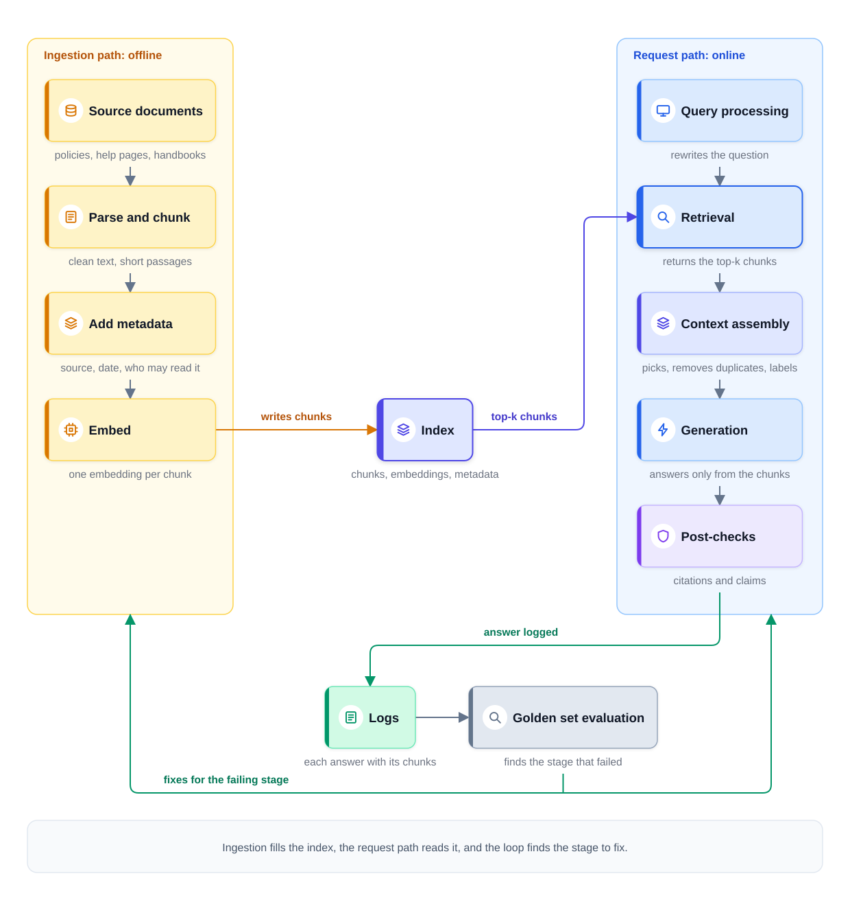
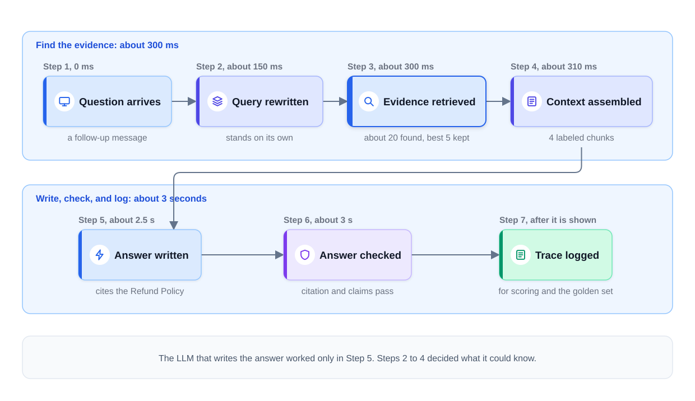

0% completed
Introduction: RAG & Retrieval
On This Page
Know the Vocabulary
Part 1: The Model Does Not Know Your Rules
What Interviewers Expect
Part 2: What a RAG System Is
The Definition
RAG Is Two Systems in a Row
What a RAG System Is Not
Part 3: Follow One Question
Part 4: The Lessons in This Module
Part 5: Where This Module Fits in the Framework
Part 6: What This Module Reuses, and What Reuses It
Part 7: Common Mistakes This Module Prevents
Mistake 1: Drawing Only a Vector Database
Mistake 2: Indexing the Documents Once
Mistake 3: Trusting Meaning Search With Exact Codes
Mistake 4: Filling the Context Window
Mistake 5: Assuming Retrieved Means Correct
Mistake 6: Checking Permissions After the Answer
Mistake 7: Measuring Only the Final Answer
FAQs
Key Takeaways
Check Your Understanding
Know the Vocabulary
This lesson uses the terms below many times. Read them once now, and come back here when a later section needs one.
- Large language model (LLM): A model that writes text, such as an answer to a question. It learned from a very large amount of text.
- Token: The unit of text an LLM reads and writes. In English, one token is about three-quarters of a word on average.
- Context window: The largest number of tokens an LLM can handle in one request. The instructions, the question, any added evidence, and the answer must all fit inside it.
- Hallucination: An answer that sounds confident but is not supported by facts, such as an invented policy rule.
- Retrieval-augmented generation (RAG): A design in which the system first finds relevant text for a question. It then gives that text to an LLM, which writes the answer from it.
- Corpus: The full set of documents the system can search, such as every policy page and help article.
- Chunk: A short passage cut from a document, often a few hundred tokens long. Retrieval searches and returns chunks, not whole documents.
- Metadata: Facts stored with each chunk, such as its source, its date, and who is allowed to read it.
- Ingestion: The background pipeline that loads documents, cleans them, cuts them into chunks, and stores them for search.
- Embedding: A list of numbers that captures what a piece of text means. Texts with similar meaning get similar numbers.
- Vector database: A store that keeps chunk embeddings with their metadata. It quickly finds the embeddings closest to the embedding of a question.
- Lexical search: Search that matches the exact words of the query. It is good at codes, names, and rare terms.
- Semantic search: Search that matches meaning by comparing embeddings. It can find a passage even when the passage uses different words from the question.
- Top-k retrieval: Returning the k chunks that best match a query, where k is a number the team chooses, such as 5 or 20.
- Reranker: A slower, more accurate model that reads the question and each candidate chunk together. It puts a short list of candidates in a better order.
- Context assembly: Choosing, ordering, and labeling the chunks that go into the context window, within a token budget.
- Citation: A pointer from a claim in the answer to the chunk that supports it.
- Groundedness: Whether every claim in an answer is supported by the evidence the system supplied.
- Golden set: A fixed set of test questions with known good answers. The team runs it on every change before the change ships.
Part 1: The Model Does Not Know Your Rules
The Module 1 capstone scoped a support assistant for the food-delivery company. The assistant answers questions about order status and refund policies. This module builds the part of it that answers from the company's documents.
Imagine a customer asks it a simple question: "My order came 50 minutes late. Do I get any money back?"
An LLM can write a fluent answer to that question. But the model learned from text collected before its training ended. It never saw this company's refund policy. It cannot know that the policy changed last Tuesday.
So the model has three gaps.
- Private facts. Internal policy pages and help articles were never in its training data.
- Fresh facts. Anything that changed after training is missing or out of date.
- Permissions. The model cannot tell which user is allowed to see which document.
Without help, the model may fill these gaps with a guess. The guess can sound confident and still be wrong. That is a hallucination. In a refund answer, it can cost the company money or the customer's trust.
There are three common ways to close the gap, and Prompting, Fine-Tuning, or RAG compares them. Prompting alone would mean pasting every policy page into every request, which is slow and costly. It also fails once the pages no longer fit in the context window. Fine-tuning changes how a model behaves, but it is a poor way to store facts that change every week.
The usual answer for facts is retrieval. Look the facts up first. Then ask the model to answer from them. This module teaches how to build that well.
What Interviewers Expect
Many candidates draw an LLM box, add a box labeled "vector database," and stop there. Interviewers then ask the questions this module answers. How do documents get into that database, and how do edits reach it? How do you find the right passage when the customer's words differ from the policy's words? What happens when the right passage is not found? How do you stop the model from making things up? Who is allowed to see which document?
These questions are about the system around the model, not about the model itself. This lesson gives you a map of that system. The six lessons after it fill in each part.
Part 2: What a RAG System Is
The Definition
Retrieval-augmented generation is a design in which the system first finds the evidence for a question. It then asks an LLM to answer from that evidence. A RAG system is everything needed to do this well. It prepares the documents, finds the right passages, gives them to the model, and checks the answer. It has three parts.
-
The ingestion path prepares the documents. It runs in the background whenever a document is added, edited, or deleted. It loads each document, cleans the text, and cuts it into chunks. It adds metadata to each chunk and computes the chunk's embedding. Then it writes everything into the index.
-
The request path answers the question. It runs while the user waits, and it is the serving path from Step 5 of the framework. It has five stages: query processing, retrieval, context assembly, generation, and post-checks.
-
The feedback loop keeps answers good. Every answer is logged together with the chunks it used. The golden set tests every change before it ships. When an answer fails, the team finds the stage that failed and fixes that stage.
The index links the first two parts. It is the searchable store of chunks. It usually includes a vector database for semantic search and a keyword index for lexical search. Ingestion writes chunks into it, and retrieval reads chunks out of it.
Each of the five request stages has one job.
- Query processing turns the user's message into a query that search can use. For example, "Do I get money back for that?" needs the earlier messages to explain what "that" is. This stage also checks whether the documents can answer the question at all.
- Retrieval searches the index and returns the top-k chunks. It often runs lexical search and semantic search together. A reranker can then put a short list in a better order.
- Context assembly picks the chunks that go into the context window and removes duplicates. It labels each chunk with its source and date.
- Generation sends the instructions, the chunks, and the question to the LLM. The instructions tell it to answer only from the chunks and to cite them. They also tell it to say so when the chunks do not contain the answer.
- Post-checks test the answer before it is shown, where the risk calls for it. Each citation must point to a chunk that was really in the context. Each claim must be supported by the chunk it cites.
The diagram below shows the three parts and how they connect.

Notice that the index sits between the two paths. The feature store held the same position in Module 2's map. The request path can only find what ingestion put there.
RAG Is Two Systems in a Row
A RAG system joins two systems, and each one can fail on its own.
Retrieval sets the ceiling. Suppose the chunk that holds the answer never reaches the context. Then the model cannot use it. At best, the model says it does not know. At worst, it guesses. A better model or a better prompt cannot use a passage that was never found.
Generation decides how close the answer gets to that ceiling. The right chunk can be in the context, and the model can still misread it. It can mix the chunk with facts it memorized in training. It can add a detail that the chunk never states.
So a RAG system is measured in two parts. Retrieval recall asks whether the chunks that hold the answer were among the retrieved chunks. Faithfulness asks whether every claim in the answer is supported by those chunks. When an answer is wrong, these two numbers show which half to fix.
Module 3 met the same idea in its funnel. An item that the retrieval stage drops is gone, and no ranker can bring it back.
What a RAG System Is Not
A RAG system is not a vector database. The database is one part of the retrieval stage. Much of the design work sits in ingestion, context assembly, and the checks.
A RAG system is not a guarantee of truth. It reduces hallucination by giving the model the right evidence, but it does not end it. Citations, checks, and a clear "I don't know" answer are part of the design.
A RAG system is not training. It does not change the model's weights, which are the numbers the model learned in training. A policy edit reaches answers once ingestion has processed it and any cached answers are cleared. No training run is needed.
A RAG system is not "send every document." The context window has a size limit, and every token costs money and time. Retrieval picks a few passages, so the model reads less and reads the right things.
Part 3: Follow One Question
The fastest way to understand the map is to follow one question through it. The steps below use the support assistant. The times, the policy terms, and the other numbers are illustrative assumptions.
Two things happened before the question. Last Tuesday, the support team edited the refund policy page. Within minutes, ingestion cut the new page into chunks and embedded them. It replaced the old chunks in the index. Then, a few minutes before the question, the customer asked where their order was.
Step 1: The question arrives. At 7:15 PM, the customer writes: "It came 50 minutes late. Do I get any money back for that?" The clock starts at 0 ms.
Step 2: The query is rewritten. On its own, "that" means nothing to a search engine. A small model reads the conversation and rewrites the message as a query that stands on its own. The new query reads "refund for late delivery, order 50 minutes late" and needs no earlier messages. The same stage confirms that this is a policy question the documents can answer. The assistant explains the policy. Applying a credit to the account is a separate action with its own checks. The rewrite takes about 150 ms.
Step 3: The evidence is retrieved. Two searches run at the same time. Semantic search finds chunks about late orders, even though the policy says "credit" and the query says "refund." Lexical search finds chunks that contain the exact words "late delivery" from the query. Metadata filters keep only current chunks for the customer's country that customers are allowed to read. The merged list holds about 20 candidates. A reranker reads the question with each candidate and keeps the best 5. Retrieval is done by about 300 ms.
Step 4: The context is assembled. Two of the 5 chunks are the same paragraph. One copy came from the refund policy page, and one came from a help article that quotes it, so one copy is dropped. The remaining 4 chunks fit well within an example budget of 2,000 tokens. Each chunk gets a label with its source and date, such as "[Refund Policy, updated Tuesday]" at its top. The context is ready at about 310 ms.
Step 5: The answer is written. The LLM receives the instructions, the 4 labeled chunks, and the rewritten question. The instructions say to answer only from the chunks and to cite a chunk for each claim. They also say to admit it when the chunks do not answer the question. The model writes this answer:
Orders delivered more than 30 minutes late receive a credit of 20 percent of the order total [Refund Policy].
The full answer is ready at about 2.5 seconds.
Step 6: The answer is checked. Because the answer is about money, the system checks it before the customer sees it. First, the citation must point to a chunk that was really in the context. It does. Second, a groundedness check asks whether the cited chunk supports each claim. The chunk states both "30 minutes" and "20 percent," so the check passes. The answer appears with its citation about 3 seconds after the question.
If the check had failed, the assistant would not guess. It would say that it could not confirm the policy, and it would offer a human agent.
Step 7: The trace is logged. After the answer is shown, the system records the original message and the rewritten query. It also records the IDs of the retrieved chunks, the model version, and the answer. Later, a sample of these records is scored for quality. A question the assistant got wrong becomes a new test case in the golden set.
The diagram below shows the same seven steps. Each time counts from the moment the question arrives.

Notice that the LLM that writes the answer worked only in Step 5. Steps 2 to 4 decided what it could know. Step 6 decided whether its answer was safe to show.
Notice also what Tuesday's edit did. Suppose ingestion had missed it. Retrieval would return the old policy, and the model would cite it correctly. Every check would pass, and the answer would still be wrong. The request path cannot see an edit that never reached the index, so freshness belongs to ingestion.
Notice the price of the check, too. The customer waited for the whole answer instead of seeing the first words early. A check before release trades some speed for safety. Designs use it where an error costs the most.
Part 4: The Lessons in This Module
The six lessons after this one follow the map. The first two build the ingestion path and the index. The next three follow the request path from the question to a checked answer. The capstone puts it all together for a company assistant where permissions decide the design.
| Question the lesson answers | Lesson |
|---|---|
| How does a computer find text with the same meaning, and how is that search made fast? | Embeddings and Vector Databases |
| How do documents become clean, searchable chunks, and how do edits and deletes reach the index? | Chunking and Indexing |
| What happens to a question at each stage, and how do you tell which stage failed? | The RAG Pipeline |
| Why combine exact-word search with meaning search, and when is a reranker worth its time? | Hybrid Search and Reranking |
| How do you stop the model from adding claims that its evidence does not support? | Keeping Answers Grounded |
| How do all these parts form one design when permissions matter most? | Capstone: Enterprise Document Q&A |
Part 5: Where This Module Fits in the Framework
The framework from Module 1 has seven steps. This module supplies the technical content for most of them when the question needs answers from documents. The table shows which lessons support which step.
| Framework step | What this module adds | Lessons |
|---|---|---|
| 2. Define success | Retrieval recall, faithfulness, and correct refusals, each measured on its own | The RAG Pipeline; Keeping Answers Grounded |
| 3. Map the data | The corpus, how it is parsed and chunked, its metadata, and how fast edits and deletes must arrive | Chunking and Indexing |
| 4. Pick the model | An existing LLM with clear instructions, an embedding model, and a simple search to beat | Embeddings and Vector Databases; Hybrid Search and Reranking |
| 5. Design the serving path | Five stages with a latency budget, and a designed "I don't know" answer | The RAG Pipeline; Hybrid Search and Reranking |
| 6. Keep it working | A golden set run on every change, freshness targets, and checks on live answers | Chunking and Indexing; Keeping Answers Grounded |
| 7. Count the costs | Index memory, tokens per request, and the time and cost of reranking and checks | Embeddings and Vector Databases; The RAG Pipeline; the capstone |
Step 1, framing the problem, stays with Module 1. One recognition sentence helps there: "This is document question answering." Then say what makes this corpus or this risk different.
Part 6: What This Module Reuses, and What Reuses It
Most of the parts in this module are not new. You met them earlier in the course, in other forms.
Embeddings and nearest-neighbor search come from Module 2. Embeddings and Two-Tower Retrieval turned users and items into embeddings. An approximate nearest neighbor (ANN) index then searched them. It finds close embeddings quickly without checking every one, but it can miss a few true matches. Here, a text embedding model turns each chunk and each question into an embedding. The same kind of index finds the nearest chunks.
The two search engines come from Module 3. Design Search Ranking ran lexical and semantic retrieval together, because each one catches what the other misses. Retrieval for RAG uses the same pair. The funnel from Design a Recommendation System also returns. A cheap search finds many candidates, and a slower reranker orders a short list.
Tokens, cost, and evaluation come from Module 4. Every chunk in the context costs tokens, so Inference Economics applies to context assembly. The golden set and the methods from Evaluating LLM Systems test retrieval and generation. And Prompting, Fine-Tuning, or RAG explained when retrieval is the right tool at all.
Later lessons reuse this module often. Design a ChatGPT-Style Assistant treats a user's memory as a small RAG system whose corpus is one person. Design a Code Assistant uses RAG over a code repository for its chat feature. Safety and Guardrails covers attack text hidden inside content that the system reads. System Design of a Legal Research Assistant builds on this module's capstone with stricter checks.
Part 7: Common Mistakes This Module Prevents
Mistake 1: Drawing Only a Vector Database
The database is one box inside the retrieval stage. Draw the ingestion path, the five request stages, and the feedback loop, even as simple boxes.
Mistake 2: Indexing the Documents Once
Documents change, and some get deleted. An index with no update plan serves old policies with valid citations. Say how edits, deletes, and permission changes reach the index, and how fast.
Mistake 3: Trusting Meaning Search With Exact Codes
Semantic search can confuse an exact code, such as an error number or an order ID, with a similar one. Lexical search finds exact terms. Many designs run both and merge the results.
Mistake 4: Filling the Context Window
More chunks cost more tokens and more time. They can also make answers worse, because the model may overlook evidence among many passages. Set a token budget first, then fill it with the best chunks.
Mistake 5: Assuming Retrieved Means Correct
The model can still misread the right evidence or go beyond it. Require citations, check claims where errors are costly, and design a useful "I don't know" answer.
Mistake 6: Checking Permissions After the Answer
If restricted text reaches the model, it can appear in the answer, the logs, or a cache. Filter by permission during retrieval, before any restricted text reaches the model.
Mistake 7: Measuring Only the Final Answer
A wrong answer can come from missing documents, weak retrieval, or poor use of good evidence. Measure retrieval recall and faithfulness separately, so you fix the stage that failed.
FAQs
Q: If the model's context window can hold all my documents, do I still need retrieval?
Usually, yes. Sending every document with every request costs tokens and time on every request. Long contexts can also make the model overlook evidence. Retrieval also lets the system filter by permission before text reaches the model. For a small, public set of documents that rarely changes, sending all of it can be a reasonable first version.
Q: Does RAG stop hallucination?
No. It reduces hallucination by giving the model the right evidence. The model can still misread that evidence or add to it. Citations, groundedness checks, and a designed "I don't know" answer lower the risk further.
Q: Should I fine-tune the model on the documents instead?
No, not for facts that change or that only some users may see. Fine-tuning is better for behavior, such as a fixed output format or a tone of voice. Many designs combine retrieval for facts with fine-tuning for behavior.
Q: Do I need to know how a vector index works inside?
No. Know what it does, how much memory it needs, and that its fast, approximate results can miss some matches. The next lesson names the one structure worth knowing.
Key Takeaways
- The model does not know your private or recent facts. RAG looks them up first, then asks the model to answer from them.
- A RAG system has three parts. The ingestion path prepares the documents, the request path answers in five stages, and the feedback loop finds the stage to fix.
- Retrieval sets the ceiling. A passage that is never retrieved cannot be used, so retrieval recall and faithfulness are measured separately.
- Freshness belongs to ingestion. The request path cannot see an edit that never reached the index, so edits and deletes must reach the index within a target time.
- RAG reduces hallucination but does not end it. Citations, groundedness checks, and a designed "I don't know" answer complete the design.
- In a system design interview, draw both paths and the loop at the start. Then say how documents stay fresh, how retrieval finds both exact terms and meaning, how answers stay grounded, and where permissions are enforced.
The next lesson, Embeddings and Vector Databases, explains how text becomes embeddings and how a database finds the nearest ones quickly.
Check Your Understanding
1. An assistant gives a wrong answer about returns. The log shows that the chunk with the correct return policy was never retrieved. Would a stronger LLM fix this?
Show answer
No. Retrieval sets the ceiling. The model can only use the evidence that reaches its context. The fix belongs in retrieval or ingestion, such as better chunking, better search, or a missing document.
2. What are the three parts of a RAG system, and when does each one run?
Show answer
The ingestion path, the request path, and the feedback loop. Ingestion runs in the background whenever documents change, and it fills the index. The request path runs while the user waits, in five stages from query processing to post-checks. The feedback loop logs each answer with its chunks and tests every change on the golden set.
3. The refund policy changed yesterday. The assistant still quotes the old rule with a valid citation, and every check passes. Which part failed?
Show answer
The ingestion path. The edit never reached the index, so retrieval returned the old chunk. The answer was faithful to that chunk, so the checks passed. A freshness target on ingestion, with monitoring that checks it is met, prevents this kind of error.
4. Why not put every policy document into every request instead of retrieving a few chunks?
Show answer
Because of cost, speed, size limits, and permissions. Every token costs money and time on every request. The documents may not fit in the context window. The model can overlook evidence in a long context. And retrieval can filter out documents that the user is not allowed to see.
0 Comments
No comments yet. Be the first to start the discussion!
Reading Progress
0%
On This Page
Know the Vocabulary
Part 1: The Model Does Not Know Your Rules
What Interviewers Expect
Part 2: What a RAG System Is
The Definition
RAG Is Two Systems in a Row
What a RAG System Is Not
Part 3: Follow One Question
Part 4: The Lessons in This Module
Part 5: Where This Module Fits in the Framework
Part 6: What This Module Reuses, and What Reuses It
Part 7: Common Mistakes This Module Prevents
Mistake 1: Drawing Only a Vector Database
Mistake 2: Indexing the Documents Once
Mistake 3: Trusting Meaning Search With Exact Codes
Mistake 4: Filling the Context Window
Mistake 5: Assuming Retrieved Means Correct
Mistake 6: Checking Permissions After the Answer
Mistake 7: Measuring Only the Final Answer
FAQs
Key Takeaways
Check Your Understanding